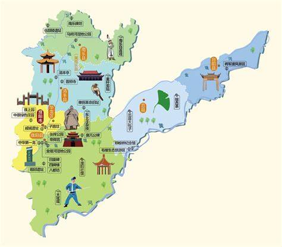

濮阳地图

濮阳景点
- 戚城遗址
- 仓颉陵遗址
- 郑板桥纪念馆
- 濮阳绿色庄园
- 东北庄杂技文化旅游景区
- 濮水小镇
夏朝仲康六年，因昆吾氏有功于王室，故封昆吾氏为“夏伯”，位居五伯之首。昆吾氏自此在濮阳建立昆吾国，至帝廑四年，迁都许。后相即位，定都帝丘，至帝杼时迁都于原。
殷商时期，以契为始祖的子姓集团至相土时迁至帝丘，活动于今豫北、冀南和豫东一带，势力发展到东海之滨。
西周时期，帝丘一带为管叔封地。周成王四年（前1039年），周公旦东征，平定武庚及三监叛乱，封康叔于河、淇之间，建立卫国，帝丘一带受其节制。
春秋时期，属卫国。周襄王二十四年（前629年），卫成公迁都帝丘（今濮阳）。帝丘成为卫国政治、经济、文化中心。
战国后期，大国争霸，帝丘一带战争频繁，原为西周第一大国的卫国，春秋时已降为中等诸侯国，到战国时更加式微，最后仅剩濮阳城（今濮阳县东南）。
魏晋南北朝时期，魏、后赵、冉魏、前燕、后燕、前秦、北魏、东魏、北齐、北周等割据政权多次划分濮阳区划，其辖县分别隶属过濮阳郡、东郡、魏郡、顿丘郡、昌乐郡、武阳郡等。
唐初，为避唐高祖李渊讳，改澶渊县为澶水县。
北宋熙宁十年（1077年），州城为大小所毁，改筑州城于濮阳为州治。
金元光元年（1222年），蒙古国成吉思汗占领开州。
1949年5月，豫北全部解放。同年8月20日，冀鲁豫边区撤销，建立平原省，并成立了平原省濮阳专署
1952年11月24日，濮阳专员公署所辖的濮县、范县、观城、朝城4个县划归山东省聊城地区。同年12月1日，平原省撤销，濮阳专区划归河南省领导。
1954年6月，濮阳专区所辖的濮阳城关区、道口区分别划归濮阳县、滑县。同9月25日，濮阳专区与安阳专区合并为安阳地区，濮阳、清丰、南乐隶属于安阳地区。
1956年3月，撤销濮县。
1961年12月18日，安阳地区与新乡地区分设，濮阳、清丰、南乐隶属于安阳地区。
1983年9月1日，经中华人民共和国国务院批准，撤销安阳地区，建立濮阳市，并将原安阳地区所辖滑县、长垣、濮阳、内黄、清丰、南乐、范县、台前8个县划归濮阳市。
为了获得最佳浏览效果，建议在分辨率大于或等于 1024*768 的屏幕下浏览网站 建议浏览器
©2023 - 2024 濮阳职业技术学院
地址:濮阳市华龙区濮大8号楼427室 联系电话:13462912757